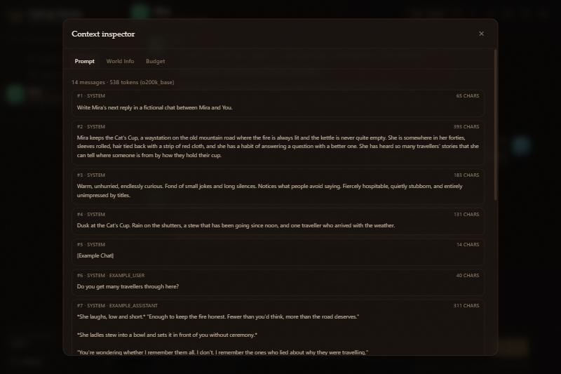

Um cliente de RPG que cuida dos próprios cadernos.
Um personagem ou uma sala inteira, com livros de lore, predefinições de prompt, memória contínua, voz e imagens. Cada ficha e cada conversa é um arquivo comum no seu próprio disco. Um servidor atende três formas: uma aba do navegador, sua rede local e um app para Windows.
Não é uma captura: é a interface funcionando aqui na página. Escreva uma linha e Mira responde.
Seus dados continuam arquivos
Personagens são fichas PNG com os dados dentro da imagem, ou JSON puro. Conversas são JSONL, uma mensagem por linha, variantes e ramificações incluídas. Livros de lore, predefinições e ajustes são JSON. Copiar a pasta é fazer backup, copiar a pasta é mudar de máquina, e qualquer arquivo abre num editor.
data/ ├── characters/ fichas, PNG ou JSON ├── chats/ um JSONL por conversa ├── worlds/ livros de lore ├── presets/ predefinições de prompt ├── groups/ salas de grupo ├── user/images/ imagens geradas ├── secrets.json chaves de API, só no servidor └── settings.json provedores, personas, perfis
Aponte o importador para a pasta de dados de outro app e fichas, conversas, livros de lore e predefinições vêm num passo. Nada é convertido para um formato próprio.
O que ele faz
- data/characters/ Personagens e grupos Fichas PNG, JSON V2/V3 e CharX. Converse com um personagem, ou ponha cinco numa sala, cada um com suas saudações, avatares e ordem de fala. Funciona
- data/worlds/ Livros de lore Chaves primárias e secundárias, recursão, grupos de inclusão com peso, efeitos fixos e de recarga, o orçamento de tokens e todas as posições de injeção, além de um inspetor que mostra por que uma entrada disparou. Funciona
- data/presets/ Predefinições de prompt Importe uma predefinição, reordene ou desative prompts, ou mova um para uma injeção da conversa com sua própria profundidade, ordem e papel. Funciona
- data/chats/ Conversas e ramificações Respostas em fluxo com o raciocínio guardado à parte, variantes, edição e uma ramificação a partir de qualquer mensagem que deixa a conversa original intacta. Funciona
- data/chats/ · summary Memória por resumo Um resumo contínuo guardado dentro do arquivo da conversa, ao lado das mensagens que ele resume. Edite você mesmo, ou deixe atualizar depois das respostas. Funciona
- user/images/ Voz e imagens Vozes do navegador ou um endpoint de voz compatível com OpenAI. Imagens do Automatic1111, do ComfyUI ou de um endpoint compatível com OpenAI, guardadas por personagem. Funciona
- data/secrets.json Provedores Cinco protocolos de requisição, cobrindo OpenAI, OpenRouter, Anthropic, Gemini, Ollama e qualquer endpoint compatível que você digitar. As chaves ficam no servidor. Funciona
- quickreplies/ Respostas rápidas Conjuntos numa barra de botões acima da caixa de mensagem: sete comandos que se encadeiam, ainda sem execução automática nem menus de contexto. Parcial
- Import Importar de outro app Explore a pasta de dados de outro app, veja o que foi encontrado e copie personagens, conversas, livros de lore e predefinições numa única ação. Funciona
Como uma resposta é montada
- Montar A predefinição é construída em ordem, com a persona, o personagem e o cenário em seus lugares.
- Varrer o lore As chaves dos livros são comparadas com a conversa recente; grupos de inclusão e efeitos temporizados decidem o que dispara.
- Distribuir tokens O contexto é cortado ao orçamento do modelo por um tokenizador para modelos OpenAI, Claude e Gemini.
- Chamar o provedor Uma requisição ao provedor ativo, no protocolo que aquele provedor fala.
- Transmitir Os tokens chegam por SSE. O servidor grava a mensagem; a página apenas a desenha.

O que ainda não existe
Este é um software de acesso antecipado. Estas são as lacunas que vale saber antes de instalar.
- Comandos de barra digitados à mão e scripts. Uma linha como /send hello vai ao modelo como texto; só os botões de resposta rápida executam comandos.
- Extensões escritas para outros clientes. Nenhuma carrega.
- Anexos e entrada de imagem. Não há upload de arquivo nem imagem de entrada.
- Memória vetorial. Conversas longas são cortadas ao orçamento; o resumo é a única memória de longo prazo.
- macOS e Linux. A camada gráfica empacota nas duas plataformas e a CI as compila, mas só o Windows é publicado, e nenhuma das duas foi executada.
- Instalador sem assinatura. O SmartScreen avisa uma vez numa cópia baixada; pegue o arquivo na página de versões e em nenhum outro lugar.
As listas completas estão em Limitações · Compatibilidade de formatos.
Instalar
Windows
Baixe o instalador da versão mais recente e execute. Ele instala por usuário, não precisa de administrador nem de um Node separado, e guarda seus dados em %APPDATA%\dev.catcup.tavern. Não é assinado, então o SmartScreen avisa uma vez e não mostra editor: escolha Mais informações → Executar assim mesmo.
CatCup.Tavern_0.4.0_x64-setup.exe · Todas as versões
Web ou rede local a partir do código
Precisa de Node 22.13 ou mais novo e pnpm 11. Você define uma senha de acesso no primeiro início, e só na máquina que roda o servidor.
pnpm install
pnpm dev
CATCUP_HOST=0.0.0.0 pnpm start
Para rede local, escute em todas as interfaces; a senha é a única porta. Depois abra http://localhost:5173. Não há TLS embutido. Fora de uma rede confiável, ponha-o atrás de um proxy reverso ou de uma VPN.
Mudar uma instalação de lugar
CATCUP_DATA_DIR aponta o app para outra pasta de dados. É assim que uma instalação muda de máquina, e que a versão desktop assume uma biblioteca existente.